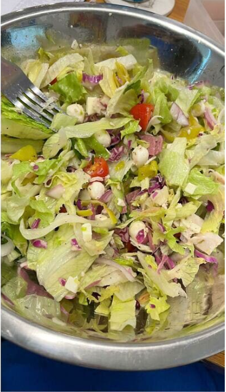
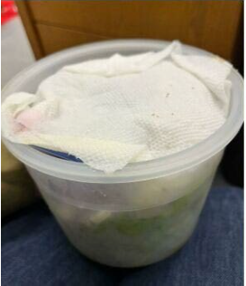
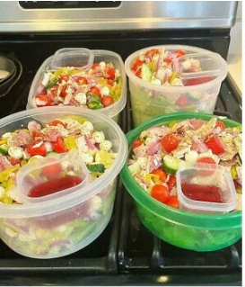
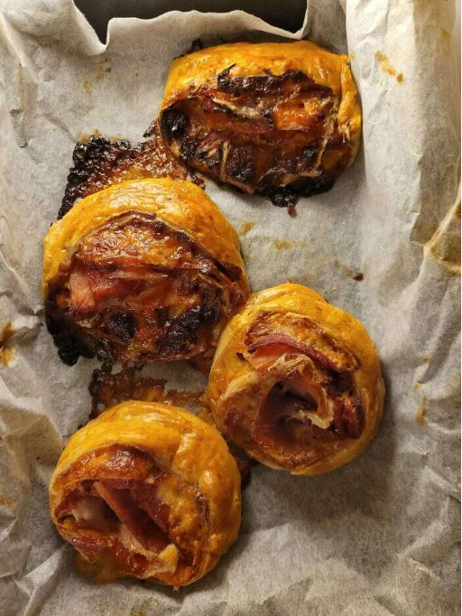

Если вы хотите сохранить салат свежим
Положите сверху под крышку бумажное полотенце, чтобы оно впитало влагу.
На фото справа салат на 4 день.
На фото справа салат на 4 день.
Если вы хотите сохранить салат свежим
Положите сверху под крышку бумажное полотенце, чтобы оно впитало влагу.
На фото справа салат на 4 день.
На фото справа салат на 4 день.
Салат 1

Салат 2

Салат 3

На фото: контейнеры с салатом, салат под бумажным полотенцем, салат на 4-й день хранения.
Лайфхак с ветчиной
Если у вас портится ветчина или вы устали делать с ней бутерброды, просто заверните ее в слоеное тесто, внутри положите сыр бри, а после приготовления ешьте с клюквенным соусом и горчицей.

×